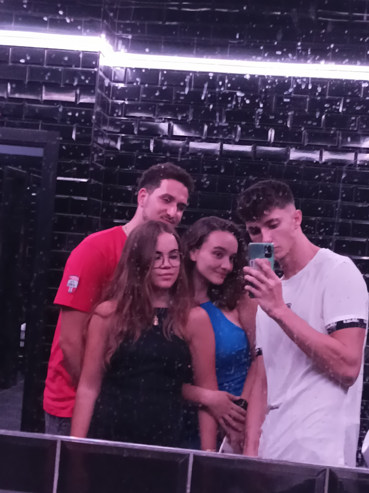
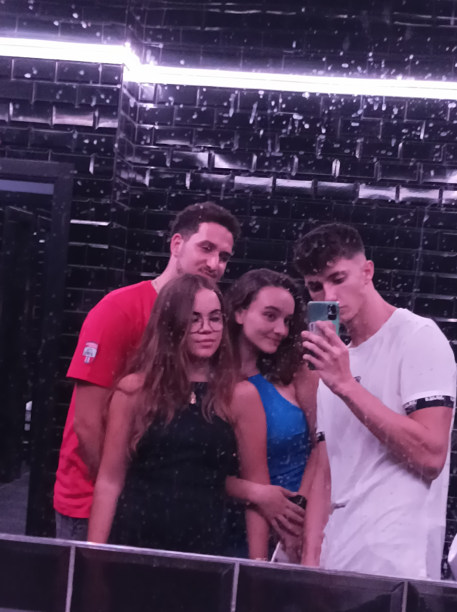

Adivina a quien le toca? Exacto, al tonto de tu novio

 



Ahora, la dedicatoria de tu novio favorito(y esperemos que el único) ;)
Bueno, pues finalmente me toca a mi, después de currarme toda esta página web, habrás visto lo mucho que te quiero, no? Porque con lo vago que soy, hacer todo esto, tiene su mérito la verdad XD.
Mi dedicatoria va a ser clara y concisa: de verdad, te doy las gracias por aparecer en mi vida. Desde que apareciste, en aquella reunión, me has cambiado la vida totalmente, sobretodo mi forma de ser, me has hecho ser mucho mejor persona, ahora me preocupo por los demás, ayudo con lo que puedo, me tomo más enserio la vida del scout e incluso soy capaz de aguantar niños!
Pero bueno, lo que si que te puedo asegurar es que tienes que aprender a valorarte más, porque no cualquiera puede hacer algo así con un cafre como yo.
Gracias por todo y te quiero.